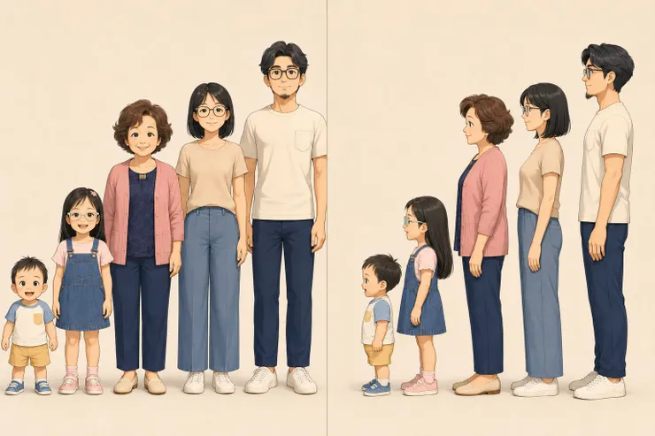

雞爸爸的個人網站「雞爸爸生活研究室」剛完成不久，另一邊，方格子也陸續傳來了即時精選的通知。上週有五篇文章獲得即時精選，這週也有三篇文章，分別在：健康、自我成長、親子與教育。看到不少格子前輩都會特別寫文章，感謝方格子的鼓勵，雞爸爸原本還想說，要不要再低調觀察一下。但轉念一想——上週 5 篇、這週 3 篇...照這個趨勢，豈不是很快就沒得謝了...
所以還是趕快把握機會，正式出來說一聲：謝謝方格子，也謝謝每一位願意停下來閱讀雞爸爸生活的人。

獲得鼓勵的不只有文章 是更認真思考地彼此
這次獲得即時精選的三篇文章，看起來分屬不同分類。一篇是雞爸爸和鼠姊姊一起體驗三伏貼，從親身感受出發，整理冬病夏治的中醫原理；一篇是雞爸爸在工作、接送與家庭三點一線之間，替自己安排的一份「心靈暑期作業」；另一篇，則記錄鼠姊姊凌晨氣喘發作，全家在半夜兩點重新認識急性氣喘的那一晚。
分類不同，寫的其實都是同一件事：一家人一起生活，卻該學會如何在生活中理解彼此。
有些文章來自一場驚心動魄的意外，有些只是某一天突然冒出的念頭；有些需要查資料、確認醫學知識，有些只需要坐下來，誠實地問自己：「這件事情，對我們家來說，究竟代表什麼？」
雞爸爸一直相信，真正值得留下來的，不一定是多偉大的事情。
可能只是女兒貼著三伏貼時說了一句「熱熱的」，可能是凌晨兩點看著血氧機上的數字，也可能是每天接送孩子回家後，終於替自己留下一點點時間。
這些普通的片段，如果當下沒有記錄，很快就會被下一個忙碌的早晨覆蓋。
網站不只是角色們的房子 希望留下的故事能愈加溫馨
雞爸爸花了不少時間寫文章，也花了很多心思整理照片、角色、時間軸和故事。慢慢地，我開始發現，這些內容已經不只是單篇文章。
鼠姊姊會慢慢長大，龍弟弟會從搖搖晃晃學走路，變成會跑、會講話，甚至有一天開始嫌爸爸囉嗦；鼠媽媽和雞爸爸，也會在一次又一次的疲累、爭執、理解與和好之中，變成和現在不太一樣的大人；兔阿嬤分享著雞爸爸小時候的故事，又看這我們自己孩子成長中的第一次，每一次全家一起經歷的慌亂與歡笑，最後都會成為一段共同的記憶。
所以，雞爸爸替這些故事蓋了一間房子。它叫做：雞爸爸生活研究室。
在這個網站裡，文章不再只是依照發布時間一篇篇往下排列，而是慢慢形成雞爸爸一家的生活軌跡。誰在故事裡出現？我們當時遇到了什麼？那一天學會了什麼？
某些事情過了幾年後，重新回頭看，又會不會產生不同的答案？雞爸爸想保存的，不只有文章，而是一家人認真面對生活的紀事。
從平面角色，到雞爸爸宇宙3D化
既然房子已經蓋好了，住在裡面的角色，當然也要慢慢完整起來。目前雞爸爸一家已經有了各自的人物設定：戴著黑框眼鏡、留著一點山羊鬍，喜歡分析研究的雞爸爸；短髮、戴眼鏡，總能讓家裡穩定下來的鼠媽媽；長直髮、戴著透明框眼鏡，活潑又愛漂亮的鼠姊姊；頭髮少少、剛學會走路，隨時準備大聲打招呼的龍弟弟；以及不戴眼鏡、短捲髮，總帶著溫暖笑容的兔阿嬤。

接下來，雞爸爸還想試著把這些角色從平面插畫，慢慢轉換成更完整的3D人物。看看能不能讓他們轉身、走路、說話，甚至把文章中的某些場景，變成一小段短影音。
也許有一天，鼠姊姊會在畫面裡跑過來，大聲問爸爸：「你在做什麼？」龍弟弟會搖搖晃晃走過來，指著雞爸爸的肚臍說：「阿臍！」
鼠媽媽則站在旁邊，看著雞爸爸又開啟一個新坑，露出一種既熟悉又無奈的表情。想到這裡，突然覺得短影音還沒做，劇情倒是已經準備得差不多了。
感謝VOCUS即時精選，是鼓勵雞爸爸繼續創作的通行證
雞爸爸知道，即時精選不是考試成績，也不代表一篇文章被認證為高分的作品。
但對一個剛開始認真整理自己生活、建立網站，也嘗試發展角色與內容方向的創作者來說，這些通知仍然像是一個又一個小小的拍肩。它好像在說：
「這篇有人看見了...」、「這故事值得被留下來...」、「你可以繼續寫下去...」
對雞爸爸而言，這份肯定最重要的地方，不是多了一個標誌，而是讓我更確定，原來真實的家庭生活，即使沒有驚天動地的劇情，也能讓人產生共鳴。
因為大家都曾累過、擔心過、犯錯過，也曾在某個看似普通的瞬間，突然感受到幸福。
謝謝方格子，也謝謝正在閱讀的你
謝謝方格子，讓這些文章有機會被更多人看見。謝謝每一位閱讀、按下愛心、留下留言，或只是默默看完文章的格友。
也謝謝那些曾經分享自己的經驗，提醒雞爸爸哪裡需要補充、哪個觀念需要修正的人。雞爸爸的文章，是我們一家人的生活開始，卻常常在讀者的回應裡，看見更多家庭的故事。
下一步，雞爸爸準備繼續寫、繼續整理，也繼續把雞爸爸宇宙慢慢蓋大。至於未來會不會真的出現3D角色、短影音，甚至讓雞爸爸一家正式動起來——目前還不知道。但既然網站都自己架了，人物宇宙也建立了，坑也已經挖到這裡了……那就繼續玩下去吧。
謝謝方格子的鼓勵，
也謝謝你，願意一起看著雞爸爸一家，把每一段普通的生活，慢慢變成值得珍藏的故事。